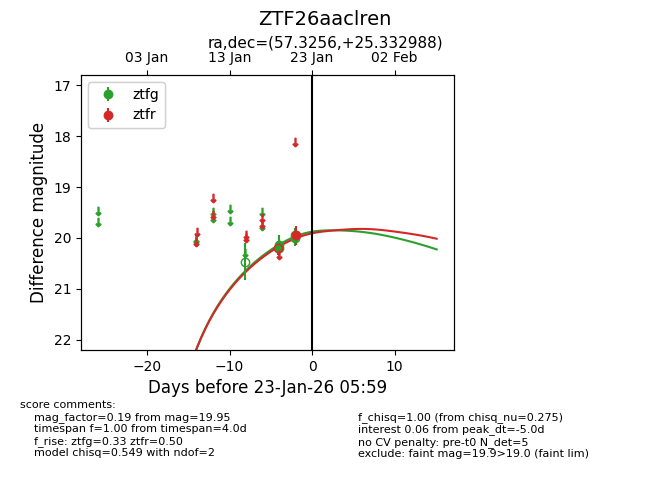
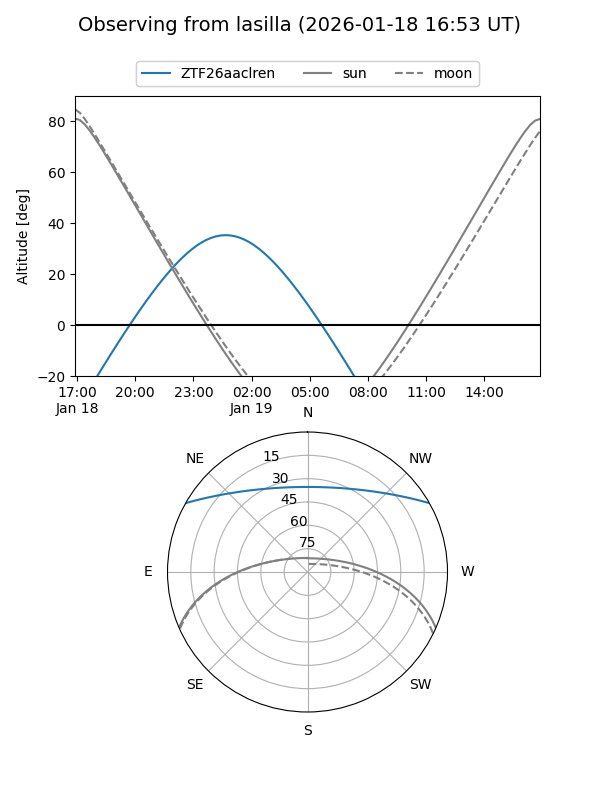
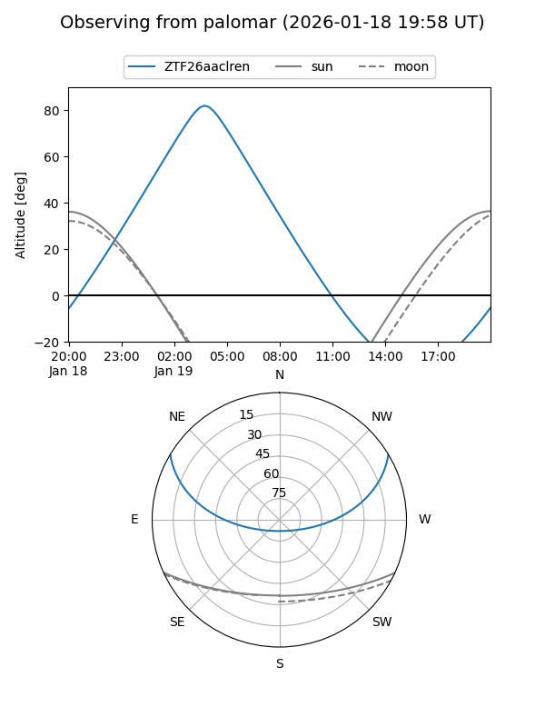
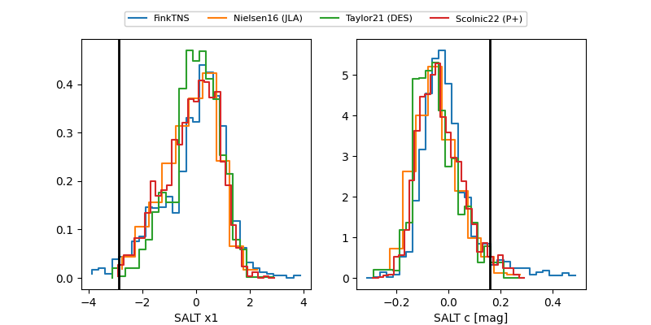

ZTF26aaclren
Target ZTF26aaclren at 2026-01-21 05:46
Aliases and brokers:
FINK: link
Lasair: link
ALeRCE: link
alt names
ZTF26aaclren (ztf,fink_ztf)
Coordinates:
equatorial (ra, dec) = 57.3256,+25.33299
equatorial (HMS+DMS) = 03:49:18.14,+25:19:58.76
galactic (l, b) = (166.1013,-22.26985)
Flags:
Photometry:
last ztfg=20.00
4 ztfg detections
Lightcurve

Visibility


Additional plots
